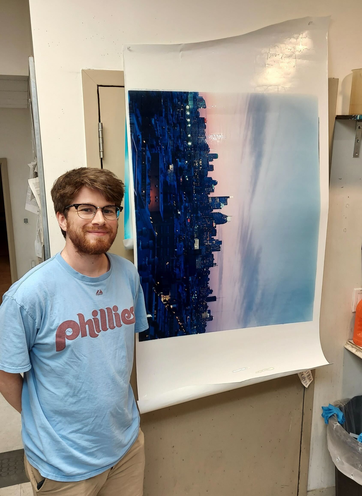

sam with a large-format print, 2025
about me
sam rizer (b. 1995) is a photographer and printmaker from pennsylvania. he first started doing film photography in 2019, and started doing color darkroom printing in 2024. his work explores alternative processes and what happens after dark.
the best way to contact him is via email at samrizer95(at)gmail(dot)com or through his instagram.